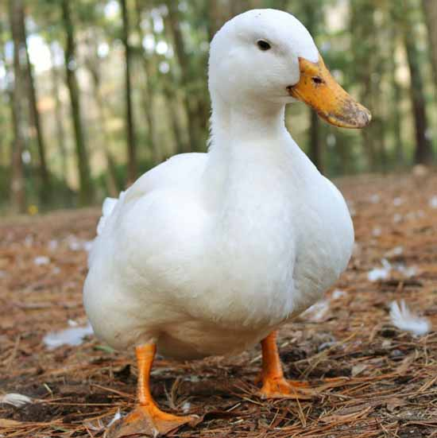

იხვი
იხვები — ბატისნაირთა რიგის ფრინველთა რამდენიმე გვარი. გაერთიანებული არიან იხვისებრთა ოჯახში. ფართოდ არიან გავრცელებული ყველა კონტინენტზე, გარდა ანტარქტიდისა. იხვები იყოფა 3 ჯგუფად: ნამდვილი იხვები, ყვინთიები და ბატასინები. საშუალო და დიდი ზომის ფრინველებია. კარგად ცურავენ და ფრენენ. აქვთ სარეწაო მნიშვნელობა. ნამდვილ იხვებს გემრიელი ხორცი აქვთ. წონა მერყეობს 250-იდან 2000 გრამამდე. ყვინთიებისა და ბატასინების ხორცი უფრო დაბალი ღირსებისაა.
იხვები მიმოფრენი ფრინველებია. საქართველოში 8 გვარის 12 სახეობაა, რომელთა უმრავლესობა აქ მიმოფრენისა და ზამთრის პერიოდებში გვხვდება. ზოგი ბუდობს კიდეც ზოგიერთი შიდა წყალსატევების ნაპირებზე. საქართველოში (ჯავახეთში) მობუდარი იხვებიდან აღსანიშნავია: წითელი იხვი (Tadorna ferruginea), თეთრშუბლა იხვი (Anas penelope), გარეული იხვი (Anas platyrtynchos), წითელნისკარტა ყურყუმელა (Netta rufinae), ქოჩორა ყურყუმელა (Nyroca fuligata) და სხვა.
ვახუშტი ბაგრატიონის ცნობით, საქართველოში იხვები შემოიყვანეს და მოამრავლეს XVII საუკუნეში. აქ მისი სახორცედ გამოზრდა ყველა კლიმატურ ზონაში შეიძლებოდა.
